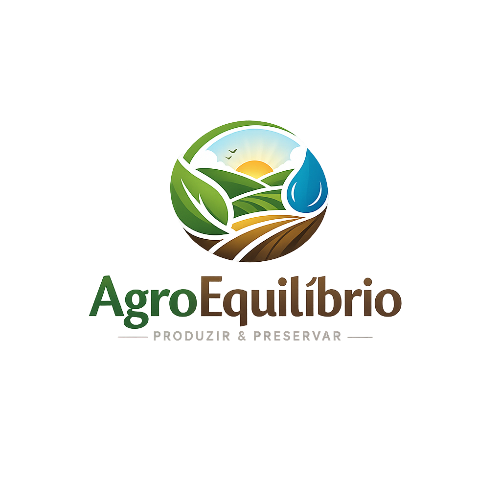

Produção e sustentabilidade em harmonia
A agricultura faz parte da vida de toda a sociedade, sendo responsável pela produção de alimentos, matérias-primas e geração de empregos. O trabalho realizado no campo influencia diretamente a economia e o abastecimento das cidades.
Com o avanço da tecnologia e o aumento da produção agrícola, surgiram também desafios relacionados ao meio ambiente, como desperdício de água, desgaste do solo e desmatamento. Por isso, tornou-se necessário buscar formas de produzir com mais equilíbrio e responsabilidade.
A sustentabilidade na agricultura representa justamente essa busca por equilíbrio, incentivando práticas que respeitem os recursos naturais e garantam uma produção mais consciente para o presente e o futuro.
Este projeto tem como objetivo apresentar a importância da sustentabilidade no meio rural e mostrar como pequenas ações podem contribuir para uma agricultura mais eficiente e responsável.
Além de fornecer informações sobre práticas sustentáveis, o projeto também utiliza recursos de programação para criar uma experiência interativa, aproximando tecnologia e conscientização ambiental.
O diagnóstico desenvolvido no site permite analisar práticas agrícolas e refletir sobre escolhas que ajudam a conservar os recursos naturais e melhorar a qualidade da produção.
A agricultura sustentável é baseada no uso responsável dos recursos naturais, buscando produzir alimentos de maneira eficiente sem causar grandes prejuízos ao meio ambiente.
Esse modelo agrícola valoriza a conservação do solo, o uso equilibrado da água e a redução de desperdícios. Também incentiva práticas que ajudam a manter a fertilidade da terra e a biodiversidade.
Além dos benefícios ambientais, a sustentabilidade no campo também contribui para uma produção mais saudável e para melhores condições de vida no meio rural.
Diversas técnicas podem tornar a produção agrícola mais equilibrada e eficiente. A rotação de culturas, por exemplo, ajuda a preservar os nutrientes do solo e reduz o desgaste causado pelo plantio repetitivo.
A irrigação eficiente evita desperdícios de água e melhora o aproveitamento hídrico nas plantações. Já o controle biológico de pragas utiliza métodos naturais para diminuir o uso excessivo de produtos químicos.
Outras ações importantes incluem a preservação de áreas verdes, o reaproveitamento de recursos e o uso de tecnologias que auxiliam na redução dos impactos ambientais.
Quando não há planejamento adequado, a produção agrícola pode causar diversos problemas ambientais. Entre os principais impactos estão o desmatamento, a erosão do solo e a contaminação da água.
O uso excessivo de agrotóxicos e o desperdício de recursos naturais também prejudicam a biodiversidade e afetam o equilíbrio ambiental. Além disso, essas ações podem gerar consequências negativas para a saúde humana e para a qualidade dos alimentos.
Esses problemas mostram a importância de adotar práticas agrícolas mais conscientes e sustentáveis.
A tecnologia tem contribuído cada vez mais para o desenvolvimento de uma agricultura mais moderna e sustentável. Atualmente, diversos recursos tecnológicos ajudam produtores a reduzir desperdícios e aumentar a eficiência da produção.
Sistemas de irrigação inteligente, sensores de umidade, drones agrícolas e monitoramento digital permitem maior controle sobre o uso da água, do solo e dos recursos naturais. Essas ferramentas auxiliam na tomada de decisões e ajudam a evitar impactos ambientais desnecessários.
A união entre sustentabilidade e tecnologia demonstra que inovação e preservação ambiental podem caminhar juntas, promovendo uma agricultura mais eficiente, consciente e preparada para o futuro.
O diagnóstico abaixo permite analisar o nível de sustentabilidade de uma produção agrícola com base nas práticas utilizadas no campo. Selecione as opções que mais representam a propriedade analisada.